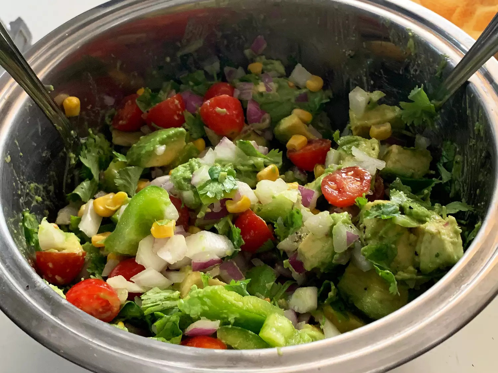

Home
Yogurt Recipe
Hamburger Recipe
Avocado Salad

Description
This avocado salad is a delicious combination of ripe avocados, sweet onions, fresh tomatoes, and cilantro.
This recipe is so easy to make and very colorful — I think you'll like it!
Ingredients
-
Avocados: This recipe starts with two peeled, pitted, and diced avocados.
-
Onion:A chopped sweet onion lends a bold flavor.
-
Bell pepper: A chopped green bell pepper gives the salad a welcome crunch.
-
Tomato:A chopped ripe tomato adds even more color and flavor.
-
Cilantro: Chopped cilantro takes the flavor up a notch.
-
Lime: Fresh lime juice adds brightness and prevents browning.
-
Seasonings: Simply season the avocado salad with just salt and pepper.
Steps
-
Combine avocados, onion, bell pepper, tomato, cilantro, and lime juice in a large bowl. Gently toss until
evenly coated. Season with salt and pepper.